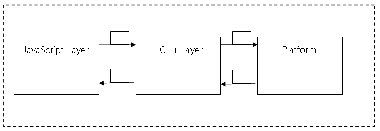

Tizen Avengers - WebApi Guidelines
Revision History
| Version | Date | Description | Editor |
|---|---|---|---|
| 0.1.0 | 2015-05-15 | Initial Draft | Wojciech Kosowicz w.kosowicz@samsung.com |
| 0.2.0 | 2015-05-22 | Extended version | Pawel Kaczmarek p.kaczmarek3@samsung.com |
| 0.2.1 | 2015-06-01 | Proofreading | Rafal Galka r.galka@samsung.com |
| 0.3.0 | 2015-06-08 | Supplemented C++ implementation guide | Rafal Galka r.galka@samsung.com |
| 0.4.0 | 2015-06-16 | Guideline | Pawel Kaczmarek p.kaczmarek3@samsung.com |
| 0.5.0 | 2015-06-18 | Devel package | Pawel Kaczmarek p.kaczmarek3@samsung.com |
| 0.5.1 | 2015-06-24 | Add info about WAPIOven.py | Pawel Kaczmarek p.kaczmarek3@samsung.com |
Overview
This document should be used as a guideline for developers who are creating web plugins for Tizen platform. Conventions and practices described here could be used to develop new web plugins for Tizen 2.4 platform and higher version. Each plugin should be written with great attention on JavaScript.
Guideline
Languages
C++, JavaScript
Codding style
Use Google style guide, C++: http://google-styleguide.googlecode.com/svn/trunk/cppguide.html
JavaScript: http://google-styleguide.googlecode.com/svn/trunk/javascriptguide.xml
API guide
Tizen Web Device API Guide Lines.pptx http://platform.sec.samsung.net/slp/Tizen/Tizen%20Managed%20API/Web%20Device%20API/Tizen%20Web%20Device%20API%20Guide%20Lines.pptx
Unit test criteria
Tizen-Compliance-Tests-Device-API-UnitTest-Criteria.v0.11_SRPOL.xlsx http://platform.sec.samsung.net/slp/Tizen/Tizen%20Managed%20API/Web%20Device%20API/Tizen-Compliance-Tests-Device-API-UnitTest-Criteria.v0.11_SRPOL.xlsx
Source code
For Tizen 2.4:
$ git clone ssh://<user.id>@168.219.209.56:29418/framework/web/webapi-plugins
$ cd webapi-plugins
$ git checkout origin/tizen_2.4
For Tizen 3.0
$ git clone ssh://<user.id>@168.219.209.56:29418/framework/web/webapi-plugins
$ cd webapi-plugins
$ git checkout origin/tizen_3.0
License and Boilerplate
Use this boilerplate in every new created source files.
/*
* Copyright (c) 2015 Samsung Electronics Co., Ltd All Rights Reserved
*
* Licensed under the Apache License, Version 2.0 (the "License");
* you may not use this file except in compliance with the License.
* You may obtain a copy of the License at
*
* http://www.apache.org/licenses/LICENSE-2.0
*
* Unless required by applicable law or agreed to in writing, software
* distributed under the License is distributed on an "AS IS" BASIS,
* WITHOUT WARRANTIES OR CONDITIONS OF ANY KIND, either express or implied.
* See the License for the specific language governing permissions and
* limitations under the License.
*/
Plugin Structure
Conventions
Each plugin is kept in separate directory inside src/ folder written in lowercase convention.
Structure
Each plugin contains following structure:
<pluginname>.gyp<pluginname>_api.js<pluginname>_extension.h<pluginname>_extension.cc<pluginname>_instance.h<pluginname>_instance.cc
Spec file
Spec file (webapi-plugins.spec) kept inside packaging/ directory
is build specification file used by rpm packaging system where variables are defined.
Those variables can be used to include or exclude particular modules from
build for each profile (mobile, TV, wearable).
GYP file
Each plugin has its own gyp file that contains information specific for it.
Plugin configuration file (gyp) is the equivalent of CMake.
It contains information what files to build what libraries to use for linking.
There can be also found one main gyp file in src/ folder (tizen-wrt.gyp)
that includes others.
Implementation files
Description of files required in plugin implementation.
- C++ files (
<pluginname>_extension.h, <pluginname>_extension.cc)
Extension namespace and other objects exported by JavaScript layer are set inside these files. - C++ files (
<pluginname>_instance.h, <pluginname>_instance.cc)
These files are responsible for communication between JavaScript layer and Native API. - JavaScript file (
<pluginname>_api.js)
This file contains all methods required by each API. All operation should be done by JavaScript as much as possible. If JavaScript can do something, it should do it. This file is responsible for checking privileges, checking arguments, calling C++ methods etc.
Plugin flow

Explanation of steps:
- From JavaScript Layer information is sent to C++ Layer. This information consists of type of call (asynchronous, synchronous) arguments given by user, any additional information that is required to successfully acquire required data. Data is sent in form of JSON.
- C++ parses acquired JSON. After the data is processed. Appropriate platform functions are called with the specified arguments.
- Platform returns specified values to C++ layer.
- Another JSON is formed. It consists of data that was acquired from platform.
WIDL
Conventions
Currently WIDL version that is used in Samsung is described here: http://www.w3.org/TR/WebIDL/. This is document from 19 April 2012.
WIDL used for plugins creation is closer to previous drafts mainly this from 21 October 2010. It is described here: http://www.w3.org/TR/2010/WD-WebIDL-20101021/.
Architecture
Each plugin is separated from each other as a different module. We do this by using module key name.
module identifer {
definitions
}
Each module describes space, binding many connected definitions in one namespace. Inside each module there are sets of interface defined. Most of the time there is one major interface defined, which is NoInterfaceObject. This is manager object which has only one property which is object that actually implements manager functionality.
interface identifier : indentifier-of-inherited-interface {
interface-member...
};
Interface is a definition of an object, which can be realized in a system (an inheritance and overloading is possible). In interface definition you can put following members:
- Constants.
- Attribute : Interface member, which represents variable inside object, can be changed, if it is not read only.
- Operation: Interface member, which represents method inside object. It is a function of programming language, which can be executed and returns a result.
- Special operation: Performs a specific task. i.e. deleter, getter
- Static operation: It is not called for a specific instance of the interface, is called for static object regardless of an instance creation. It is connected with the interface itself.
interface identifier {
attribute type identifier;
[extended-attribute] const type identifier = value;
[extended-attribute] attribute type identifier;
readonly attribute type identifier;
attribute type identifier inherits getter; ///Declared to change read only attribute //inherited from interface
attribute type identifier getraises (NoSuchValue); ///Exception declaration
return-type identifier(arguments…);
return-type identifier(argument-type argument-identifier); ///regular operation
return-type identifier(optional argument);
special-keywords return-type identifier(arguments); ///special operation
[extended-attribute]return-type identifier(arguments…); ///A variable number of //arguments
return-type identifier(arguments) raises (identifier) ///raises exception
caller return-type identifier(argument);
caller return-type (argument);
static return-type identifier(arguments);
};
Next step is to connect manager implementation with Tizen object.
Tizen implements ManagerObject
To provide actual implementations of ManagerObject, instance of its Manager interface definition has to be made. Inside this Manager interface all attributes and functions that will be available form manager namespace, should be defined. There can be attributes which are other interfaces, operations and everything that interfaces allows.
Additional interface can be available as a standalone types not connected to global namespace. Those are either obtained from operation of other interfaces or constructed with theirs constructor method. Interface which are constructible are described as follows:
[Constructor(type arg1, optional type? Arg2)]
Interface ConstructibleInterface {
attributes
operations
an so on...
};
As one can see list of parameters is specified for such constructor.
Not all parameters are mandatory, some can be preceded by optional
keyword and ? mark, after type to mark that this is not obligatory argument.
Additionally some operations can be followed by raises key word to mark that,
described exception type can be thrown during execution of such method.
Because some operations can be asynchronous, it is necessary to provide callbacks
objects that can be executed by such operation. Callback object is special type
of interface object with Callback=FunctionOnly extended attribute.
[Callback=FunctionOnly, NoInterfaceObject] interface SomeCallback {
void someMethod(type agr1, ...)
};
On the purpose of listeners which accepts dictionaries, there are callbacks that
support more than one method. There is another definition of callback which
lacks of keyword FunctionOnly.
[Callback, NoInterfaceObject] interface SomeDictionaryCallback {
void firstmethod(type somearg1, ... );
void secondmethod(type somearg2, ... );
any additional methods...
};
Example
Example of WIDL file:
module Sample {
enum SampleEnums {
"ENUM1",
"ENUM2",
"ENUM3",
};
typedef (SampleEnums) SampleType;
[NoInterfaceObject] interface SampleManagerObject {
readonly attribute SampleManager sample;
};
Tizen implements SampleManagerObject;
[NoInterfaceObject] interface SampleManager {
void sampleMethod(SampleType param1, Sample2 param2) raises(WebAPIException);
double sampleMethod2(SampleType param1) raises(WebAPIException);
void sampleMethod3(SampleCallback callback) raises(WebAPIException);
};
[Callback=FunctionOnly, NoInterfaceObject]
interface SampleCallback {
void onsuccess(Sample1 param1, Sample2 param2);
};
};
Tools
Generate stub code
To generate stub files from the widl you can use stub generator located in
tools/skeleton_generator/ directory and run the python command:
$ python WAPIOven.py -d <stub code destination directory name> <widl directory/pluginname>.widl
Path to WAPIOven.py:
$ tools/skeleton_generator/WAPIOven.py
You need to install jinja2 for WAPIOven.py:
$ sudo apt-get install python-jinja2
Example:
$ sudo apt-get install python-jinja2
$ cd tools/skeleton_generator/
$ python WAPIOven.py -d ../../src/notification/ /web-device-api/web/widl/tizen/notification.widl
WIDL files can be found in the project repository:
$ git clone ssh://<username>@168.219.209.56:29418/doc/web-device-api
The widl files are placed in: web-device-api/web/widl/tizen/
Stub files generated by above command:
<pluginname>_api.js
<pluginname>_extension.h
<pluginname>_extension.cc
<pluginname>_instance.h
<pluginname>_instance.cc
What should be done when skeleton code was generated?
<pluginname>.gypfile should be added- required privileges should be added in JavaScript file
- entry points should be checked in
<pluginname>_extension.ccfile - each method should be implemented in
<pluginname>_instance.ccfile
Using multiple JavaScript files
To use multiple JavaScript files in one plugin create js/ directory inside
plugin directory and place JavaScript files.
Inside <pluginname>_api.js required JavaScript files should be added:
//= require('common.js');
//= require('calendar_item.js');
//= require('calendar.js');
//= require('calendar_manager.js');
//= require('calendar_attendee.js');
//= require('calendar_alarm.js');
//= require('calendar_recurrence_rule.js');
To merge all JavaScript files tools/mergejs.py file is used.
This script merge all files mentioned in <pluginname>_api.js file into one
file before build process.
Implementation - JavaScript
Each plugin contains JavaScript files. This is the place where user input is being processed validated before send to C++ layer.
Badge API will be used to show the creation of JavaScript file (lot of content of this file will be already generated via Stub Generator).
Interface creation
The WIDL of BadgeManager – main entity that holds all the API methods looks like following:
[NoInterfaceObject] interface BadgeManager {
readonly attribute long maxBadgeCount
void setBadgeCount(ApplicationId appId, long count) raises(WebAPIException);
long getBadgeCount(ApplicationId appId) raises(WebAPIException);
void addChangeListener(ApplicationId[]appIdList, BadgeChangeCallback successCallback) raises(WebAPIException);
void removeChangeListener(ApplicationId[] appIdList) raises(WebAPIException);
};
Creating Manager entity
Object that will hold attributes and methods is defined as JavaScript function:
function BadgeManager() {}
Properties definition
Properties are defined within the created JavaScript function like this:
var MAX_BADGE_COUNT = 999;
Object.defineProperties(this, {
maxBadgeCount: {value: MAX_BADGE_COUNT, emumerable: true, writable: false}
});
Because the property was defined as const, writable is set to false.
Methods definition
In accordance to WIDL BadgeManager contains setBadgeCount method. To define this method within JavaScript use prototype extension functionality:
BadgeManager.prototype.setBadgeCount = function() {};
Exporting interface
Once the object is created and all the methods and attributes are set it has to be exported so it will be visible when making call to tizen.badge namespace. This is done using assigning new object instance to exports variable:
exports = new BadgeManager(); //exported as tizen.badge
exports = new CalendarManager(); //exported as tizen.calendar
Other namespaces within the module are exported as below:
tizen.CalendarAttendee = CalendarAttendee;
tizen.CalendarEvent = CalendarEvent;
tizen.CalendarTask = CalendarTask;
Utils
In src/utils/utils_api.js file there is a lot of useful tools that allow
automatization of certain operations. Most often used tools from utils_api.js
are converter and validator. All tools are available under xwalk.utils namespace.
Converter
A lot of times conversion between JavaScript types will be required. The converter tool was created in order to make this operation easier.
var converter_ = xwalk.utils.converter;
var number = converter_.toLong(result);
Validator
When API JavaScript method is called first thing that has to be done in JavaScript layer of api implementation is to process and validate arguments given by the user. The process of validation consists of ensuring that the proper amount of arguments was given and that they were of the expected type and throwing exception if necessary.
Validator helps to ensure that user sent proper values. Validator is available
at xwalk.utils.validator and predefined js types at xwalk.utils.validator.types
Below can be found example of using validator inside setBadgeCount method
that requires appId in form of string and long count value:
var validator_ = xwalk.utils.validator;
var types_ = validator_.Types;
var args = validator_.validateArgs(arguments, [
{name: 'appId', type: types_.STRING},
{name: 'count', type: types_.LONG}
]);
Privileges
Some of the API methods require privilege access, then it's the first step in JavaScript file which should be checked.
Below can be found example of using Privilege in Alarm API:
var Privilege = xwalk.utils.privilege;
// inside add, remove, removeAll methods:
xwalk.utils.checkPrivilegeAccess(Privilege.ALARM);
Exceptions
At some point whether improper data is received or given to JavaScript might require to throw exceptions. The example below shows how to throw properly predefined exceptions:
throw new WebAPIException(WebAPIException.TYPE_MISMATCH_ERR,
'Incorrect number of arguments');
WebAPIException constructor takes as argument the type of error to be thrown. The second additional argument is error message.
Synchronous methods
In order to perform synchronous operation (one that does not require callback and the result is given instantly) callSync() method of Native manager needs to be called:
var native_ = new xwalk.utils.NativeManager(extension);
var ret = native_.callSync('BadgeManager_setBadgeCount', {
appId: args.appId,
count: args.count
});
if (native_.isFailure(ret)) {
throw native_.getErrorObject(ret);
}
The first argument is the command name registered in C++ layer that has to be called, the second is arguments object that will be passed to this method. Result is assigned to ret variable.
Asynchronous methods
In order to work with method that requires callback instead of callSync(), call() method needs to be called. Apart from the first two arguments that are exactly the same as in call() method (c++ method binding, object) it takes additional argument that is a function that will be called when the native call is processed:
var native_ = new xwalk.utils.NativeManager(extension);
var callback = function(result) {
if (native_.isFailure(result)) {
native_.callIfPossible(args.errorCallback, native_.getErrorObject(result));
} else {
var calendars = native_.getResultObject(result);
var c = [];
calendars.forEach(function(i) {
c.push(new Calendar(new InternalCalendar(i)));
});
args.successCallback(c);
}
};
native_.call('CalendarManager_getCalendars', callArgs, callback);
Listeners
In order to work with listeners NativeManager provides addListener and
removeListener methods. This method takes two arguments: one is unique
listenerId that will be processed when making a call from C++ to JavaScript.
The second one is the function that is called whenever expected event occurs.
var native_ = new xwalk.utils.NativeManager(extension);
var listenerId = 'PLUGIN_LISTENER_NAME';
native_.addListener(listenerId, function(data) {
// handle event data
});
native.callSync('Calendar_addChangeListener', {
type: this.type,
listenerId: listenerId
});
Implementation - C++
Lifecycle and plugin state
All plugins instances are created by runtime on application launch. It's important to not initialize any database/service connections and platform handlers in instance constructor. All resources should be "lazy" initialized just before first use, to keep starting time as short as possible. Initialized resources can be referenced to instance and kept for further usage. Instance destructor is called on application termination and should release all used resources to prevent memory leaks.
Native layer should be considered as stateless. It means that there is
no strict reference between JavaScript and native data.
Example: If operation should change some object retrieved from platform,
identifier should be passed again and additional check if object still exists
should be made.
Namespace and entry points
Extension namespace and other objects exported by JavaScript layer are defined
inside <pluginname>_extension.cc file.
SetExtensionName("tizen.notification"); //exported in JS as new NotificationManager();
const char* entry_points[] = {"tizen.StatusNotification",
"tizen.NotificationDetailInfo",
NULL};
Plugin structure
In general Instance class (<pluginname>_instance.cc) should be
treated as command dispatcher and should be as small as possible (similar to Controller in MVC).
It's responsibility should be limited to reading/validating arguments,
forwarding call to business logic component and passing result to JavaScript layer.
Business logic should be implemented in additional classes with
SOLID principles in mind.
Commands callable from JavaScript layer should be registered in constructor of
<PluginName>Instance class which extends common::ParsedInstance.
// <pluginname>_instance.h
class MediaControllerInstance : public common::ParsedInstance {}
Currently there is no difference in registering sync and async commands.
But good practice is to separate them for readability and maintainability.
Common practice is to define two macros and call RegisterSyncHandler
method from common::ParsedInstance.
// <pluginname>_instance.cc
MediaControllerInstance::MediaControllerInstance() {
#define REGISTER_SYNC(c, x) \
RegisterSyncHandler(c, std::bind(&MediaControllerInstance::x, this, _1, _2));
#define REGISTER_ASYNC(c, x) \
RegisterSyncHandler(c, std::bind(&MediaControllerInstance::x, this, _1, _2));
REGISTER_SYNC("MediaControllerManager_getClient",
MediaControllerManagerGetClient);
REGISTER_ASYNC("MediaControllerClient_findServers",
MediaControllerClientFindServers);
// ... other commands
#undef REGISTER_SYNC
#undef REGISTER_ASYNC
}
Static method registered as a handler must have proper signature:
void InstanceClass::HandlerName(const picojson::value& args, picojson::object& out);
args- object containing arguments passed from JavaScript layerout- object containing response data returned synchronously to JavaScript layer.
ReportSuccess() or ReportError() helpers should be used to ensure
proper structure of out object.
picojson::value data = picojson::value<picojson::object());
const PlatformResult& result = model_->DoSomethingWithData(&data);
if (!result) {
LOGGER(ERROR) << result.message();
ReportError(result, &out);
return;
}
ReportSuccess(data, out);
Asynchronous calls
To perform asynchronous request common::TaskQueue component should be used.
You should use lambda expression which calls business logic and passes result to
JavaScript layer by calling PostMessage(const char* msg).
Asynchronous response is not matched to request automatically. You should pass
callbackId received from JavaScript layer as an argument. It allows to
call the appropriate user callback in JS async message handler.
auto search = [this, args]() -> void {
// business logic
picojson::value servers = picojson::value(picojson::array());
PlatformResult result = client_->FindServers(&servers.get<picojson::array>());
// response object
picojson::value response = picojson::value(picojson::object());
picojson::object& response_obj = response.get<picojson::object>();
response_obj["callbackId"] = args.get("callbackId");
if (result) {
ReportSuccess(servers, response_obj);
} else {
ReportError(result, &response_obj);
}
// post JSON string to JS layer
PostMessage(response.serialize().c_str());
};
TaskQueue::GetInstance().Async(search);
Listeners
Sending events from platform listeners is very similar to sending asynchronous
responses. PostMessage(const char* msg) should be called with listenerId
passed from JavaScript layer.
auto listener = [this, args](picojson::value* data) -> void {
if (!data) {
LOGGER(ERROR) << "No data passed to json callback";
return;
}
picojson::object& request_o = data->get<picojson::object>();
request_o["listenerId"] = args.get("listenerId");
PostMessage(data->serialize().c_str());
};
Logger
Logger is available from common/logger.h header. There are macros:
LOGGER(priority)prints message with given priorityLOGGER_IF(priority, condition)prints message with given priority when condition is met
Available log priorities are: DEBUG, INFO, WARN, ERROR
and should be used to filter messages based on level of importance. Example:
LOGGER(ERROR) << "Scan file failed, error: " << res;
LOGGER_IF(DEBUG, variable < 0) << "Value is lower than zero";
Error handling
Regarding to Google C++ Style Guide we do not use Exceptions.
To deliver error conditions to JavaScript layer, that can occur in the platform,
PlatformResult class should be used. All available error codes are defined
in common/platform_result.h
PlatformResult can be returned anywhere in native layer and it should be converted to exception and thrown in JavaScript layer:
// C++ layer
return PlatformResult(ErrorCode::NOT_FOUND_ERR, "Cannot remove notification error");
return PlatformResult(ErrorCode::UNKNOWN_ERR, "Cannot get notification id error");
// JavaScript layer
var native_ = new xwalk.utils.NativeManager(extension);
if (native_.isFailure(ret)) {
throw native_.getErrorObject(ret);
}
Devel package
After build process webapi-plugins-devel-xxx.rpm should be generated in gbs directory. Package contains required common headers files, gypi files and webapi-plugins.pc file.
Package structure
|-usr
|---include
|-----webapi-plugins
|-------src
|---------common
|-------tools
|---------gyp
|-----------pylib
|-------------gyp
|---------------generator
|---lib
|-----pkgconfig
File webapi-plugins.pc source:
project_name=webapi-plugins
dirname=tizen-extensions-crosswalk
prefix=/usr
exec_prefix=${prefix}
libdir=${prefix}/lib/${dirname}
includedir=${prefix}/include/${project_name}/src
Name: ${project_name}
Description: ${project_name}
Version:
Requires: dbus-1 dlog glib-2.0
Libs: -L${libdir} -ltizen_common
Cflags: -I${includedir}
Creating custom web device plugins module
To create custom web device plugins module webapi-plugins.spec, tizen-wrt.gyp and src files are needed.
Skeleton below shows the required structure of test module.
├── packaging
│ └── webapi-plugins.spec
└── src
│ ├── test
│ ├── test_api.js
│ ├── test_extension.cc
│ ├── test_extension.h
│ ├── test.gyp
│ ├── test_instance.cc
│ └── test_instance.h
└── tizen-wrt.gyp
webapi-plugins.spec source:
%define _manifestdir %{TZ_SYS_RW_PACKAGES}
%define _desktop_icondir %{TZ_SYS_SHARE}/icons/default/small
%define crosswalk_extensions tizen-extensions-crosswalk
Name: webapi-plugins-test
Version: 0.1
Release: 0
License: Apache-2.0 and BSD-2.0 and MIT
Group: Development/Libraries
Summary: Tizen Web APIs implemented
Source0: %{name}-%{version}.tar.gz
BuildRequires: ninja
BuildRequires: pkgconfig(webapi-plugins)
%description
Tizen Test Web APIs.
%prep
%setup -q
%build
export GYP_GENERATORS='ninja'
GYP_OPTIONS="--depth=. -Dtizen=1 -Dextension_build_type=Debug -Dextension_host_os=%{tizen_profile_name} -Dprivilege_engine=%{tizen_privilege_engine}"
GYP_OPTIONS="$GYP_OPTIONS -Ddisplay_type=x11"
/usr/include/webapi-plugins/tools/gyp/gyp $GYP_OPTIONS src/tizen-wrt.gyp
ninja -C out/Default %{?_smp_mflags}
%install
mkdir -p %{buildroot}%{_libdir}/%{crosswalk_extensions}
install -p -m 644 out/Default/libtizen*.so %{buildroot}%{_libdir}/%{crosswalk_extensions}
%files
%{_libdir}/%{crosswalk_extensions}/libtizen*.so
tizen-wrt.gyp source:
{
'includes':[
'/usr/include/webapi-plugins/src/common/common.gypi',
],
'targets': [
{
'target_name': 'extensions',
'type': 'none',
'dependencies': [
'test/test.gyp:*',
],
'conditions': [],
},
],
}
test.gyp source:
{
'includes':[
'/usr/include/webapi-plugins/src/common/common.gypi',
],
'targets': [
{
'target_name': 'tizen_test',
'type': 'loadable_module',
'sources': [
'test_api.js',
'test_extension.cc',
'test_extension.h',
'test_instance.cc',
'test_instance.h',
],
'include_dirs': [
'../',
'<(SHARED_INTERMEDIATE_DIR)',
],
'variables': {
'packages': [
'webapi-plugins',
],
},
},
],
}
webapi-plugins-devel-test.zip contains test module which depends on webapi-plugins devel package.
Custom web device plugins module test is placed in src/ directory and contains all required files.
Please see Plugin structure chapter for more details.
To install custom web device plugins module webapi-plugins-xxx.rpm and webapi-plugins-devel-xxx.rpm must be installed first.
After build and installation webapi-plugins-devel-test tizen.test namespace should be available.
var test = tizen.test.ping();
console.log(test); // Hello!